前言
本文是根据自己的理解翻译而来，如有疑惑可查看原文 The story of a V8 performance cliff in React。
本次暂定翻译三篇文章：
- JavaScript engine fundamentals: Shapes and Inline Caches(Published 14th June 2018)
- JavaScript engine fundamentals: optimizing prototypes(Published 16th August 2018)
- The story of a V8 performance cliff in React(Published 28 August 2019)
JavaScript types
在 JavaScript 中，值有 8 总类型（当前）：Number，String，Symbol，BigInt，Boolean，Undefined，Null，Object。
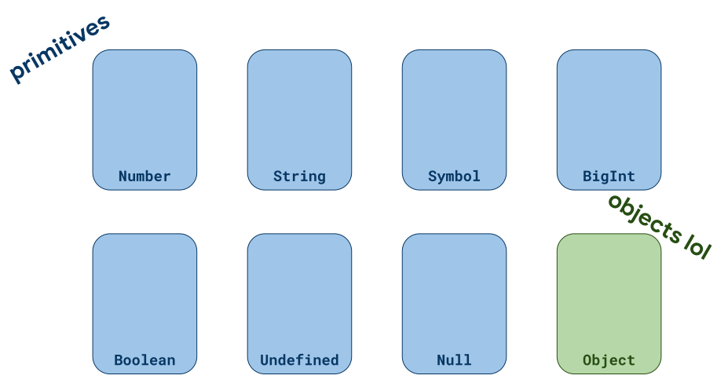
除了一个明显的例外，这些类型都可以用 typeof 直接查看。
1 | typeof 42; |
typeof null 返回的是 'object'，而不是 'null'，要了解为什么，首先要把所有的 JavaScript 类型分成两组：
- objects(即，对象类型)
- primitives(即，非对象类型)
照此来说，null 表示「没有对象」，而 undefined 表示 「没有值」。
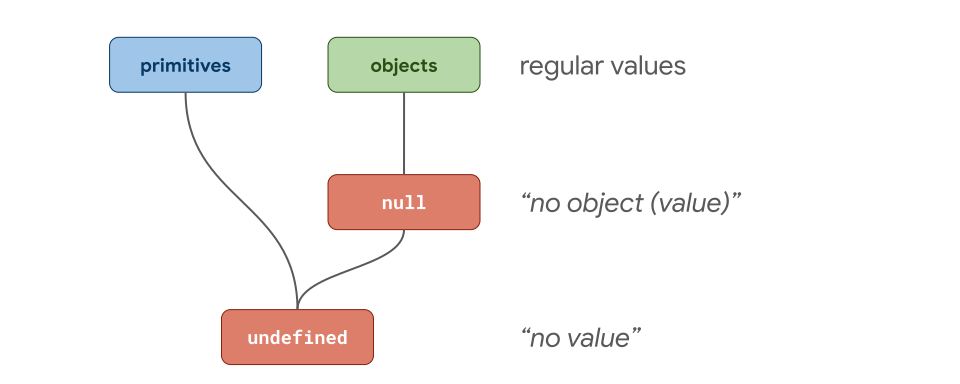
按照这个思路，Brendan Eich 在设计 JavaScript 时，受到 Java 的影响，使得右手边的值执行 typeof 后都返回 object。因此，即便规范里有 Null 类型，typeof null === 'object' 依然成立。
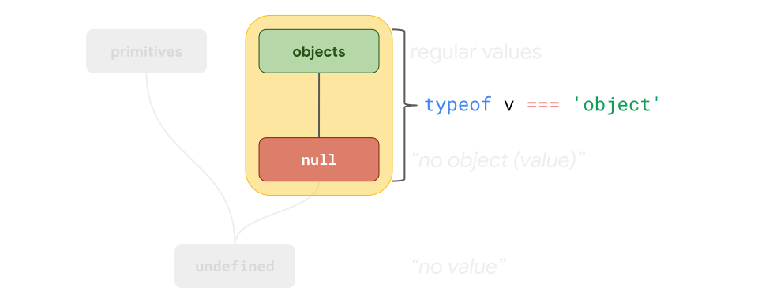
Value representation
JavaScript 引擎能够在内存中表示任意的 JavaScript 值。然而，值得注意的是，JavaScript 引擎在内存中值类型的表现形式是不同于 JavaScript 中的类型描述。
例如，42，在 JavaScript 中是 number 类型。
1 | typeof 42; |
在内存中有好多种方式表示整数，例如 42:
| representation | bits |
|---|---|
| two’s complement 8-bit | 0010 1010 |
| two’s complement 32-bit | 0000 0000 0000 0000 0000 0000 0010 1010 |
| packed binary-coded decimal (BCD) | 0100 0010 |
| 32-bit IEEE-754 floating-point | 0100 0010 0010 1000 0000 0000 0000 0000 |
| 64-bit IEEE-754 floating-point | 0100 0000 0100 0101 0000 0000 0000 0000 0000 0000 0000 0000 0000 0000 0000 0000 |
ECMAScript 将数字标准化为 64 位浮点值，也称为双精度浮点或 Float64。但是，这并不意味着 JavaScript 引擎总是以 Float64 的形式存储数字 —— 这么做会很低效。引擎会选择其它的内部表现形式，除非观测到的行为完全匹配 Float64。
在真实的 JavaScript 应用中，大多数数字都是合法的 ECMAScript 数组索引，即，属于 0 ~ 2³²−2 范围内的整数。
1 | array[0]; // Smallest possible array index. |
JavaScript 引擎会为数字选择最优存储的表达形式以此优化数组元素的访问效率。对于处理器的内存访问操作，数组索引必须是二进制补码的形式。用 Float64 表示数组是一种很费性能的行为，因为每次访问数组元素引擎都需要在 Float64 和二进制补码之间转换。
32 位的二进制补码表达形式对数组操作是很有用的。通常来说，处理器执行整型操作比执行浮点型操作要快得多。所以说，下面的例子，第一个循环比第二个循环快两倍。
1 | for (let i = 0; i < 1000; ++i) { |
操作符也是一样。在下面的代码中，模运算符的性能取决于处理的是否是整数。
1 | const remainder = value % divisor; |
如果两个操作数都是整数的形式，CPU 就可以高效地计算出结果。如果除数是 2 的倍数，V8 还会有额外的捷径。对于值是浮点型的形式，计算过程会变得复杂耗时。
因为整型操作的执行速度通常比浮点型要快很多，所以，引擎就应该使用二进制补码来表示所有的整型和整型操作的结果。遗憾的是，那是有悖于 ECMAScript 规范的！ECMAScript 采用了 Float64，某些整数运算实际上产生的是浮点型。在下面这种情况下，对于能够产生正确的结果很重要。
1 | // Float64 has a safe integer range of 53 bits. Beyond that range, |
左边的值都是整型，而右边的却是浮点型。以上的操作在使用 32 位二进制补码的形式是没法正确执行的。JavaScript 引擎必须确保整型操作被合理地处理以生成想要的 Float64 结果。
对于在 31 位有符号整数范围内的小整数，V8 有特殊的表示形式，称为 Smi。对于非 Smi 的数值会被表示为 HeapObject，它是内存中某些实体的地址。我们使用一种特殊的 HeapObject，即所谓的 HeapNumber，来表示超出 Smi 范围的数字。
1 | -Infinity // HeapNumber |
如上所示，某些数字被表示为 Smi，其它数字被表示为 HeapNumber。V8 对 Smi 专门优化，因为在真实的 JavaScript 编程中，小的整数是非常普遍的。Smi 没必要在内存中分配专用的实体，而且可以素快速地整型操作。
Smi vs. HeapNumber vs. MutableHeapNumber
有以下对象：
1 | const o = { |
x 的值 42 被编程为 Smi，因此它被存储在对象里。另一方面值 4.2 需要一个独立的实例（空间）来保存这个值，并且这个对象会指向这个实体。
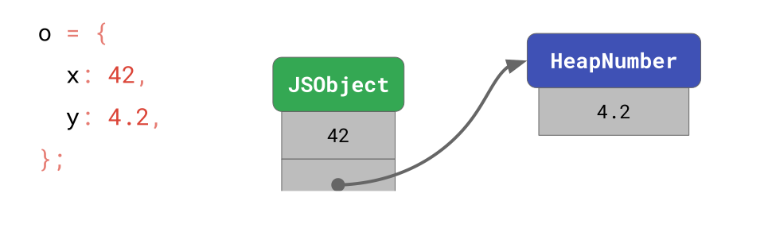
运行以下 JavaScript 代码片段：
1 | o.x += 10; |
这种情况下，x 的值可以就地更新，因为新的值 52 也在 Smi 的范围内。
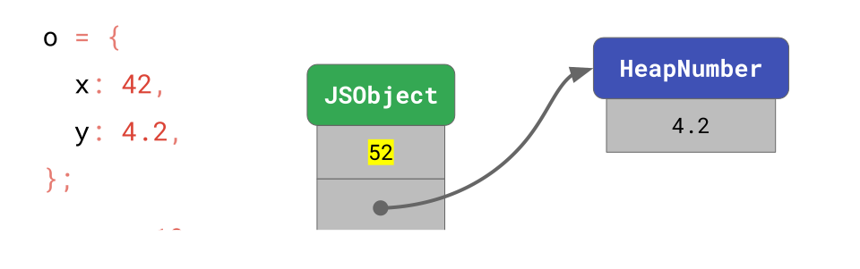
然而，新的值 y=5.2 不在 Smi 范围内且不同于之前的值 4.2，因此 V8 为 y 重新分配了新的 HeapNumber 实体。
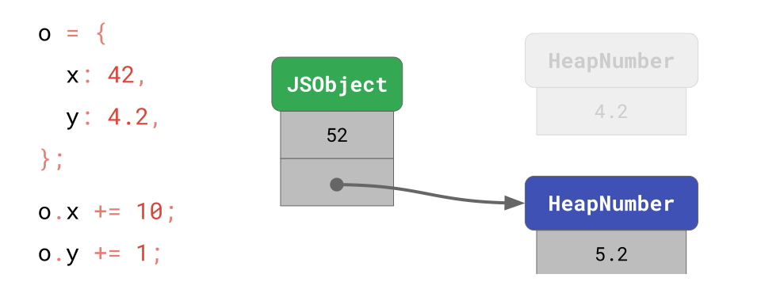
HeapNumber 是不可变的，它使得某些优化成为可能。例如，我们把 y 赋值给 x：
1 | o.x = o.y; |
我们只需要把它连接到同一个 HeapNumber 上而不是重新分配一个新的实体（空间）。
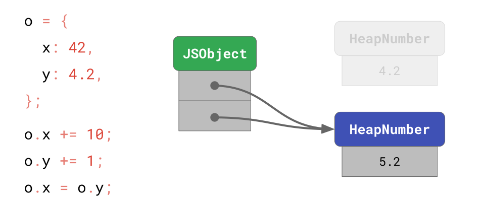
HeapNumber 不可变也存在缺点，如果更新的值经常不在 Smi 的范围内，它就会变慢，例如下面的例子：
1 | // Create a `HeapNumber` instance. |
第一行创建了一个 HeapNumber 实例，其初始值为 0.1。在循环体中值从 1.1，2.1，3.1，4.2 变到 5.1，一共创建了 6 个 HeapNumber 实例，其中 5 个会在循环结束后变没有任何用处。
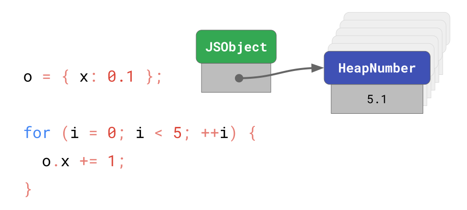
为了避免这种情况，作为优化，V8 提供了就地更新非 Smi 数值的方法。当一个字段对应着非 Smi 的数值，V8 会在 shape 上将这个字段标记为 Double，并分配一个保存 Float64 的 MutableHeapNumber 实体。
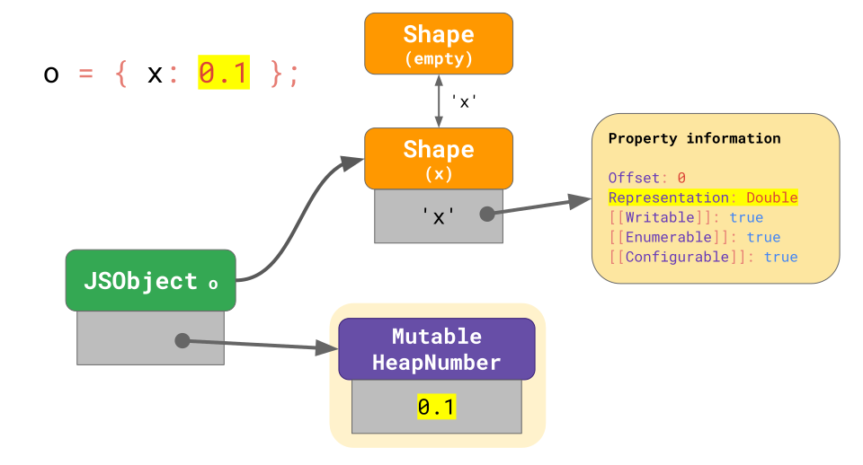
当字段里的值发生变化时，V8 不必分配一个新的 HeapNumber，而是在 MutableHeapNumber 实体中就地更新。
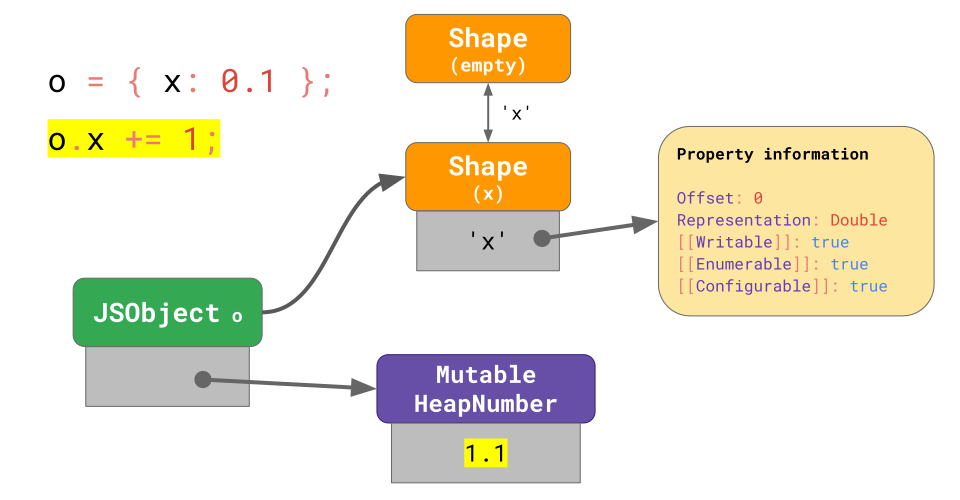
然而，需要注意的是，MutableHeapNumber 中的值是可以改变的，所以值不应该传来传去的。
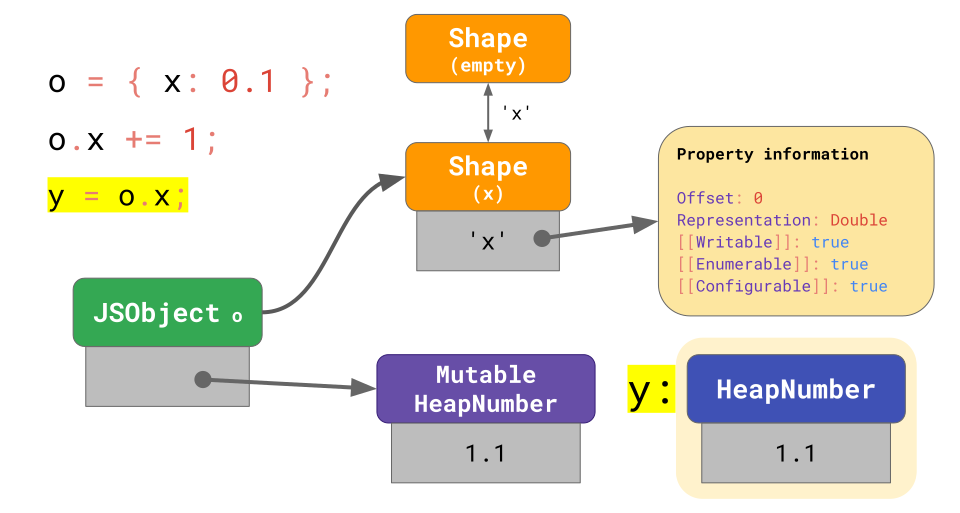
例如，你把 o.x 赋值给变量 y，你不希望 y 会随着 o.x 的改变而改变！所以在给 y 赋值前，必须将 o.x 的值重新包装成 HeapNumber。
对于浮点型，V8 已经默默地包装了一下。但是，对于小的整数也采用和 MutableHeapNumber 相同的方法，就会显得浪费，因为 Smi 本就是一种更高效的表现形式。
1 | const object = { x: 1 }; |
为了避免低效率，我们会在 shape 上为小整数对应的字段上标记 Smi，并且会原地更新数值，只要这个数值在 Smi 范围内。
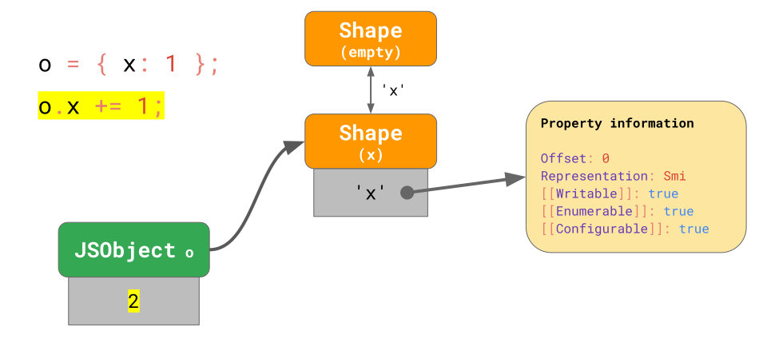
Shape deprecations and migrations
如果一个字段里包含的值在 Smi 范围内，之后又不属于 Smi 范围，这中间发生了什么？现有两个对象，它们的 x 属性值都是 Smi 表示形式。
1 | const a = { x: 1 }; |
这两个对象都指向同一个 shape，x 属性特性 Representation 被标记为 Smi：
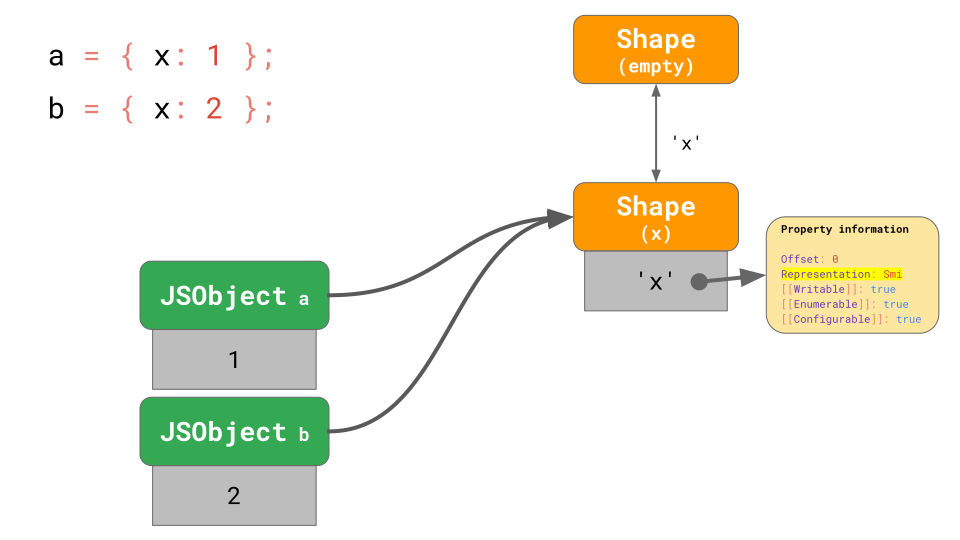
当 b.x 变成 Double 形式，V8 会创建一个新的 shape，属性 x 的 Representation 被标记为 Double 且指向之前的空 shape。V8 也会为属性 x 分配一个 MutableHeapNumber 实体用来保存值 0.2。然后让对象 b 指向新创建的 shape 并且内部偏移量为 0 的位置指向刚分配的 MutableHeapNumber 实体。最后，我们把旧的 shape 标记为废弃的，并断开与过渡树（transition tree）的链接。这就完成了从空 shape 到新 shape 的过渡。
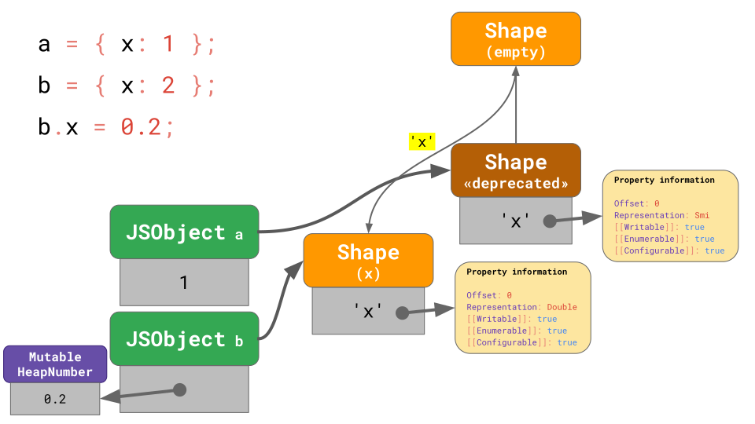
我们不能同时完全删除旧 shape，因为对象 a 还在使用，而且短时间找到所有链接到旧 shape 的对象并更新它们，对 V8 来说是笔很大的开销。相反，V8 不急着处理：只有在改变对象 a 的时候才开始迁移到新的 shape。最终，标记为废弃的 shape 会慢慢淡出视野并被垃圾回收机制抹除。
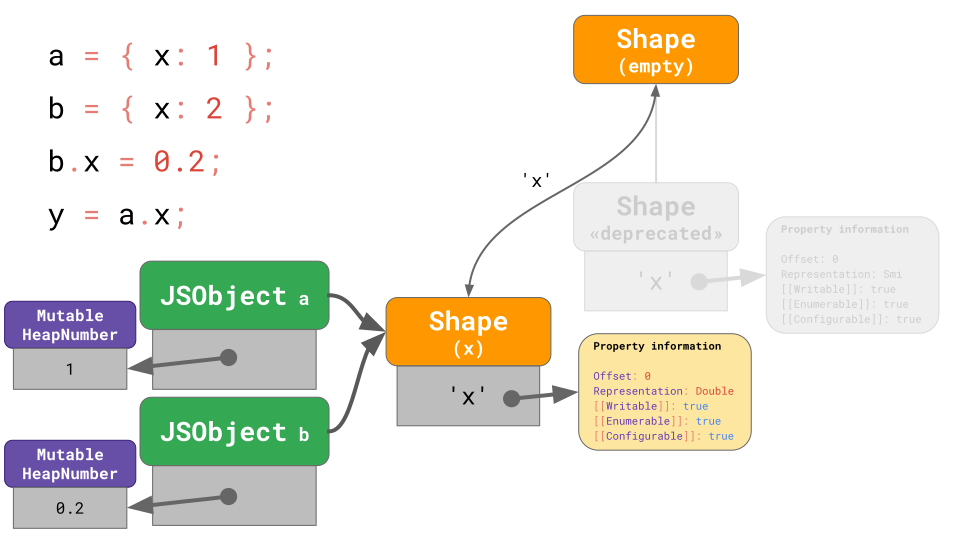
更棘手的问题是，如果对象上属性特性 Representation 发生变化的属性不是 shape 链上的最后一个，又会发生什么呢？
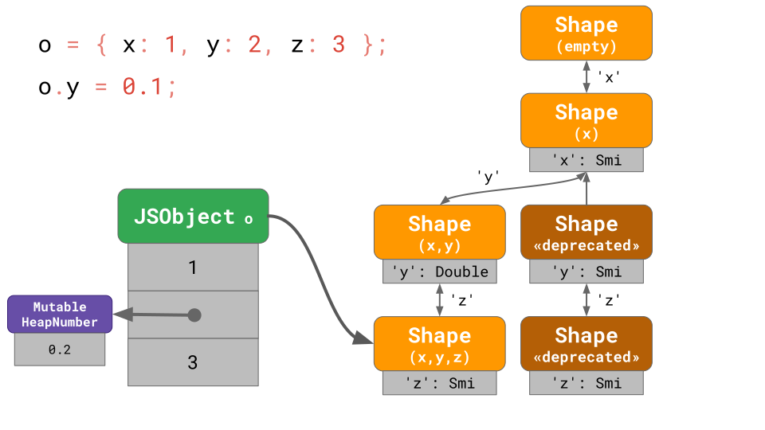
从产生分支的 shape 开始，我们为属性 y 创建了一个新的过渡链且 y 被标记为 Double。我们在使用新的过渡链时，也就意味着旧的过渡链将被废弃。在最后一步，我们把实例 o 迁移到新的 shape 并用 MutableHeapNumber 保存 y 的值。就这样，新对象不再使用老的那一套，一旦旧的 shape 上的链接都被移除掉，旧 shape 也会从过渡树上消失。
Extensibility and integrity-level transitions
Object.preventExtensions() 防止将新属性添加到对象中。如果你这么做了，它将会抛异常。（如果是在非严格模式下，它不会抛异常而是默认什么都不做。）
1 | const object = { x: 1 }; |
Object.seal 与 Object.preventExtensions 相似，但是它会把所有的属性标记为不可配置，这就意味着你不能删除它们，或改变他们的可枚举性，可配置性，可写性。
1 | const object = { x: 1 }; |
Object.freeze 与 Object.seal 相似，但是它将所有属性标记为不可写以防止属性值被修改。
1 | const object = { x: 1 }; |
让我们来思考一个具体的例子，有两个都只有属性 y 的对象，并阻止第二个对象有任何的扩展。
1 | const a = { x: 1 }; |
就如我们所知的，从空的 shape 过渡到一个有属性 x （被标记为 Smi）的新 shape 上。当我们阻止 b 的扩展时，我们会过渡到标记为不可扩展的新 shape 上。这个新 shape 没有任何属性，仅仅作为一个标识。
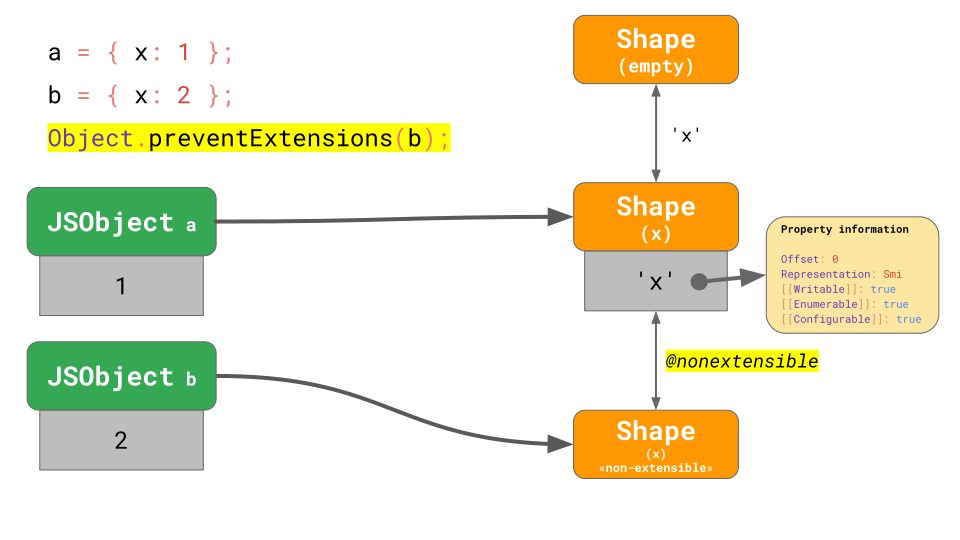
注意，我们不能就地更新有 x 的 shape，因为对象 a 依然是可扩展的。
The React performance issue
让我们用以上学到的知识来解析下 the recent React issue #14365。简单重现这个 bug：
1 | const o = { x: 1, y: 2 }; |
有一个拥有两个字段的对象，而且它们的属性特性 Representation 被标记为 Smi。我们阻止对象的进一步扩展，但最终我们还是强制改变第二字段的属性特性 Representation 的值（Double）。
就如之前学到的，大致流程如下：
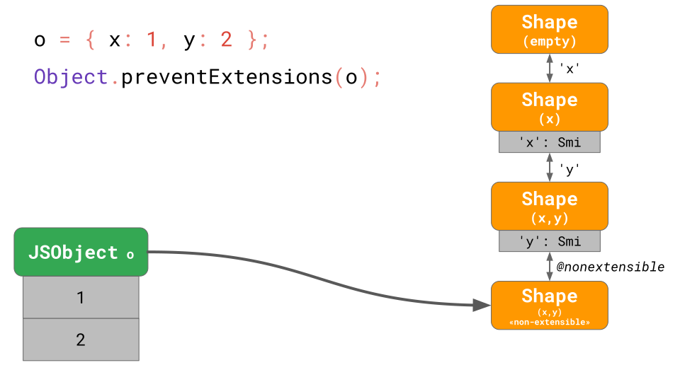
每个属性的特性 Representation 都被标记为 Smi，并最终过渡到被标记为不可扩展的 shape 上。
我们需要将 y 的属性特性 Representation 标记为 Double，这意味着我们需要从引入 y 属性之前的 shape 开始。在这个例子中，就是引入 x 属性的那个 shape。但是， V8 会很困惑，因为当前的 shape 是不可扩展的，而找到的 shape 却是可扩展的。V8 不知道怎么去处理这个过渡树。因此，V8 不再试图搞清楚这些关系，而是创建了一个独立的 shape，这个 shape 和先前的过渡树没有任何关联，而且也不被任何其它对象共享。可以把它当作孤立的 shape：
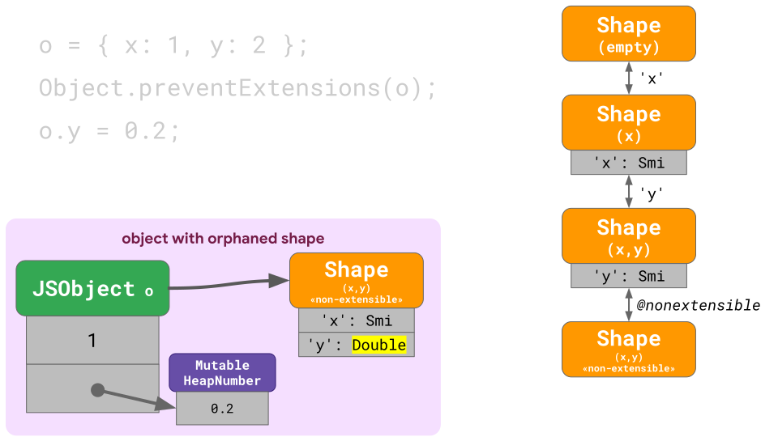
你可以想象，如果有很多对象的话，这样会变得很糟糕，因为整个 shape 系统已经失去价值。
在 React 的案例中，当开始分析数据时，FiberNode 上的一些字段需要记录时间戳。
1 | class FiberNode { |
这些字段（比如，actualStartTime）初始化值是 0 或 -1，因此属性特性 Representation 为 Smi。但是，之后由 performance.now() 生成的浮点型数值被保存在这些字段中，因此属性特性 Representation 被标记为 Double。除此之外，React 还阻止 FiberNode 实例扩展属性。
刚开始的状况如下：
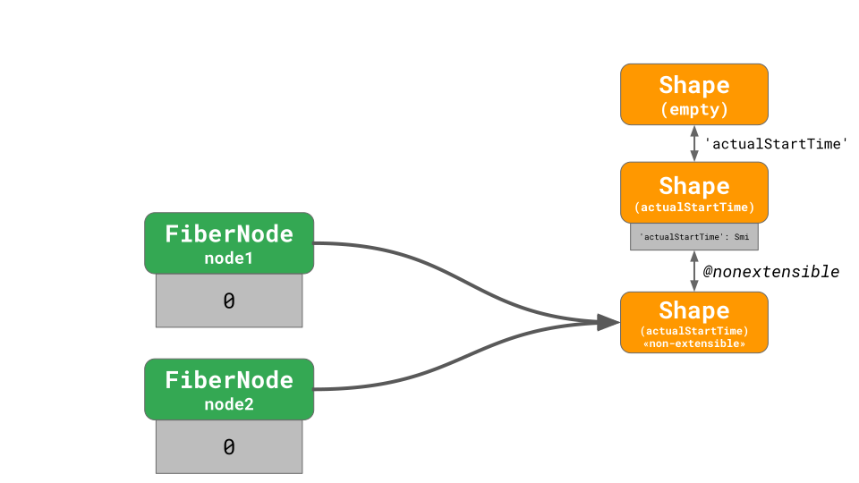
如预期，两个实例共享着 shape 树。但是之后，一旦你存储了真实的时间戳，V8 就会无从下手：
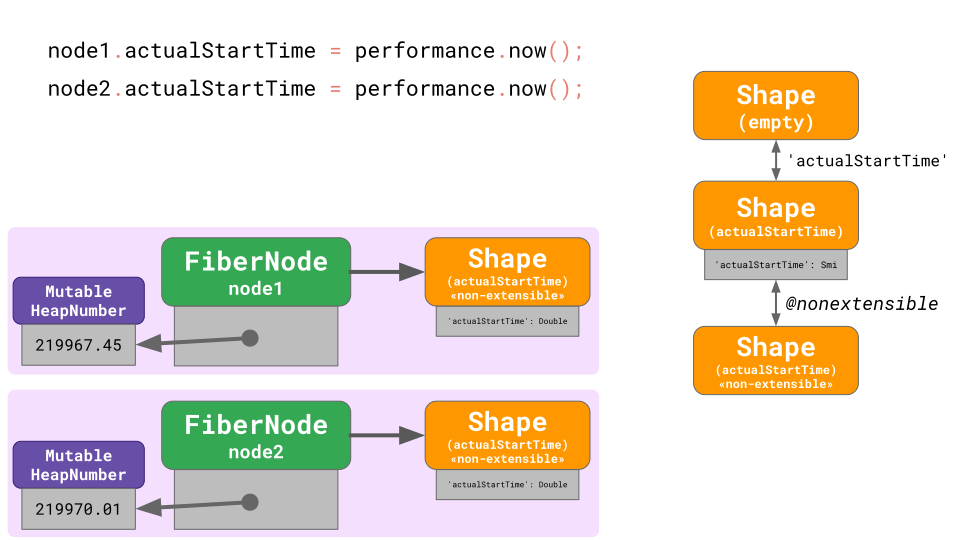
V8 先后给 node1，node2 分别分配了独立的 shape，且它们之间没有任何关联。真实中的 React 应用有着数万个这样的 FiberNode。你可以想象，这种情况将会严重影响到 V8 的性能。
幸运的是，这个问题在 V8 v7.4 中解决了。研发人员找到了改变属性特性 Representation 的方法，V8 终于知道它该怎么做了：
两个 FiberNode 实例指向不可扩展的 shape，shape 中的 actualStartTime 被标记为 Smi。当 node1.actualStartTime 被分配新的值时，将会生成一条新的过渡链，而且之前的过渡链会被标记为废弃的。
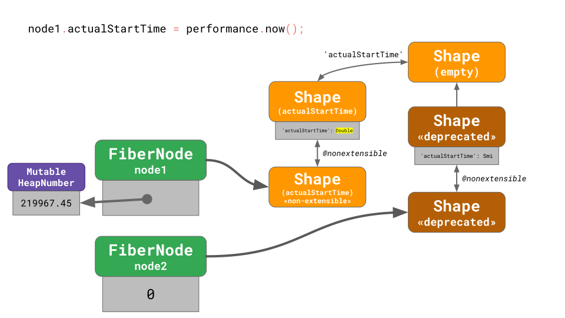
可以注意到，现在的过渡链可以正确的过渡转移。
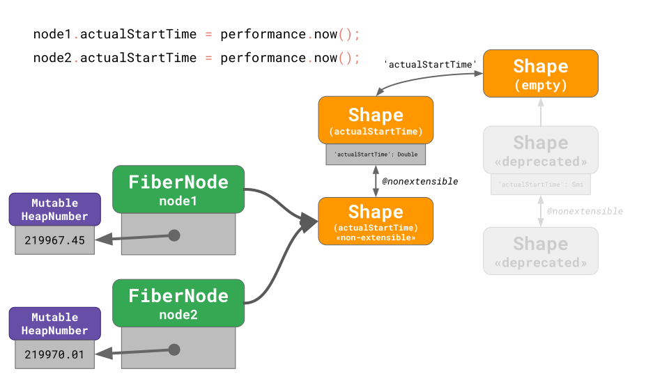
当 node2.actualStartTime 也被重新分配时，所有的链接都指向了新的 shape，过渡树中废弃的部分将会被垃圾回收机制清除。
React 团队将 FiberNode 所有关于时间的字段都改成了 Double 形式从而缓解这个问题。
1 | class FiberNode { |
由 React 具体的 Bug 引出了 V8 特有的问题，通常来说，开发者不必对某个版本的 JavaScript 引擎做优化。不过，当时事情向不好的方向发展时，我们也不会束手无策。
要知道 JavaScript 引擎在幕后做了很多事，尽可能的不要去混合类型。例如，给一个数字字段初始化为 null，这样做的话会使得一些优化化为泡影，而且可读性降低。
1 | // Don’t do this! |
换句话说，写可读性代码，性能自然会紧跟其后！
Take-aways
本文覆盖了一下几点：
- JavaScript 区分了 primitives 和 objects，而且 typeof 不靠谱。
- 即使是相同类型的值也会有不同的表达形式。
- JavaScript 引擎会为每个属性找到最优的表达形式。
- 讨论了 V8 处理 shape 的废弃，迁移和可扩展。
基于以上的知识，我们可以使用一些 JavaScript 编程技巧来提升性能：
- 以相同的方式初始化对象类型，这样 shape 系统会更高效。
- 为你的字段选择合理的值（「Representation」：Smi 或 非 Smi）。